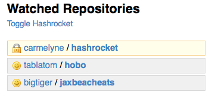

githelper – github bookmarklet
Designed to add helpful UI elements to github.com
Features
- Adds a link to your dashboard which toggles the Hashrocket projects under "watched repositories"

Install
- Drag
githelper
to your bookmarks
- Visit your github dashboard
- Click the bookmarklet